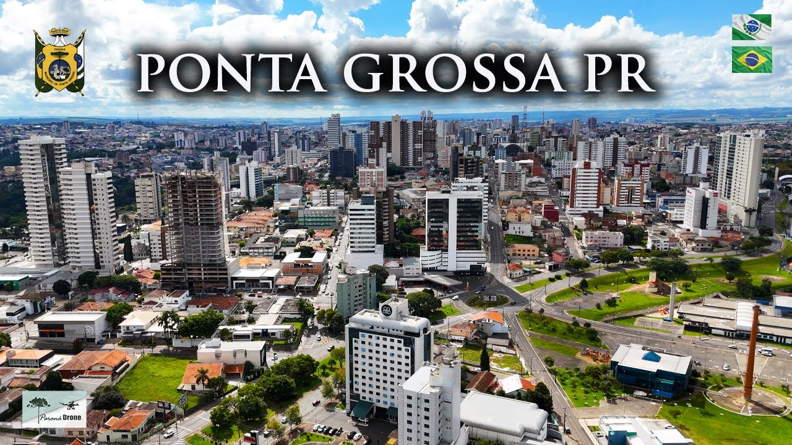

Minha cidade favorita é Ponta Grossa, no Paraná. Gosto de seus belos parques, da natureza preservada e das famosas formações rochosas de Vila Velha. A cidade oferece qualidade de vida, pessoas acolhedoras e boa infraestrutura. Sempre encontro lugares agradáveis para passear, descansar e aproveitar momentos especiais com minha família.
Além disso, Ponta Grossa possui uma economia forte, boas oportunidades de estudo e trabalho, diversos eventos culturais e gastronômicos, tornando a cidade um excelente lugar para viver, visitar e construir uma família.
